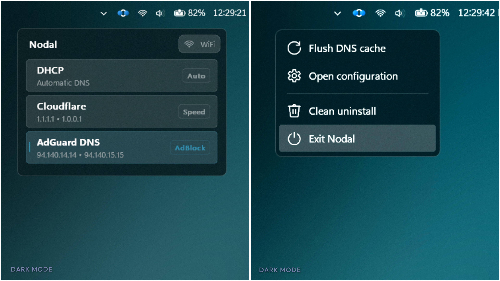
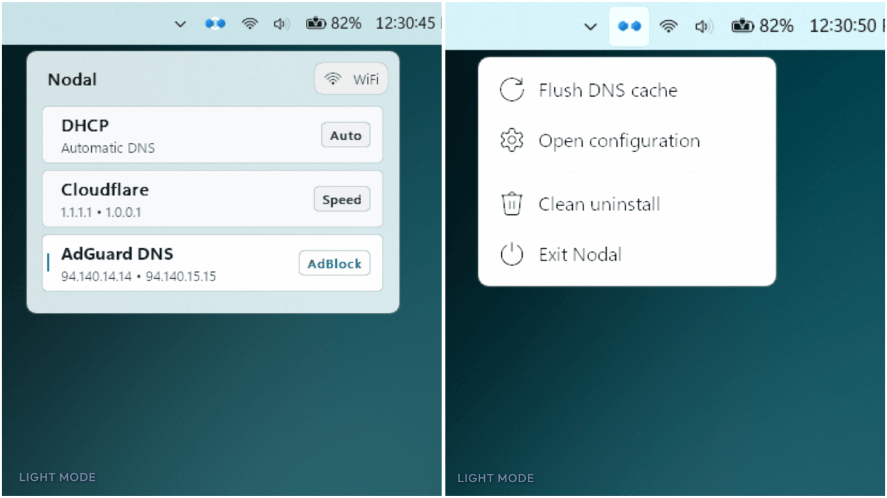

Nodal
Your DNS, switched in one click — right from the tray.
Native Windows. No dashboard. No account. No telemetry. Free forever.
Preview


Why Nodal
One click
Switch resolvers straight from the tray; Windows Settings never opens.
Native Win32
Dark/light and accent aware. No Electron, no web views, no runtimes.
Silent privilege
Approve elevation once; every later switch runs without prompts.
Zero footprint
No drivers, no services, no telemetry, no network requests of its own.
Clean uninstall
One tray action reverses every change Nodal ever made.
Featherweight
One self-contained executable, under 5 MB idle.
Install
Download the installer from Releases and run it — a portable build ships alongside it.
Every stage, checksum verification and unattended switch are documented in the Installation guide.
Uninstall
Right-click the tray icon → Clean uninstall. Automatic DNS is restored on every adapter, the scheduled task, startup entry, presets and the app itself are removed — nothing else on the PC is touched.
Read uninstall docs →Configuration
Presets, theme and privacy behaviour are driven by one local file — every key, type and constraint documented in the Configuration guide.
Policies
Nodal contains no telemetry and makes no network requests of its own — all data stays on your machine.